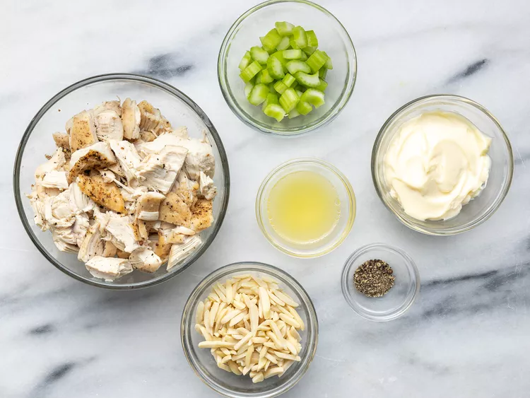
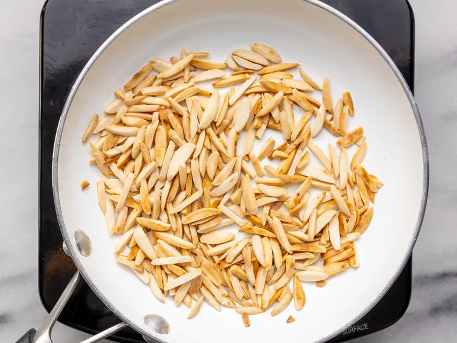
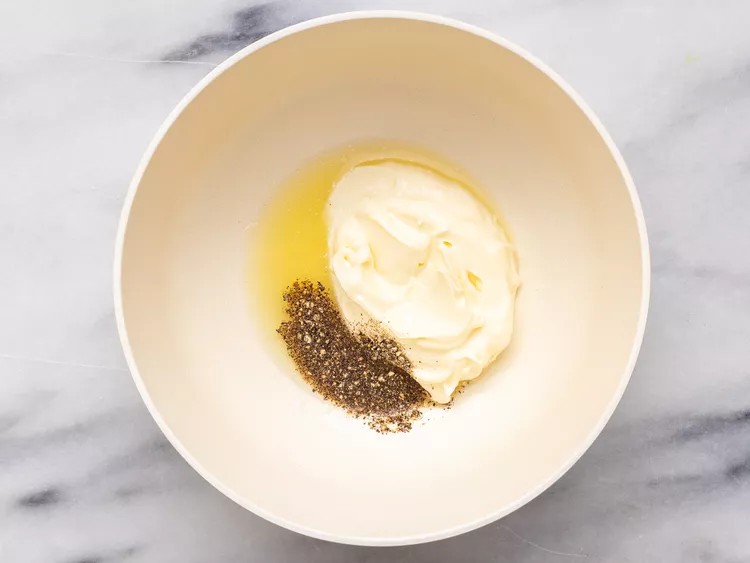
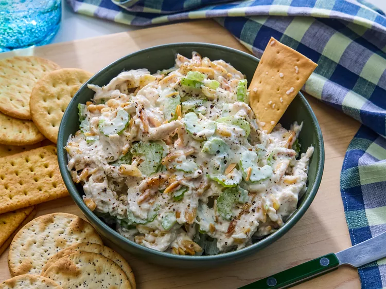

Best Chicken Salad

Best Chicken Salad
Everyone needs this best chicken salad recipe in their collection! This creamy homemade chicken salad is quick and easy to make with just a handful of everyday ingredients, is genius at using up leftovers, and perfect for warm weather picnics, potlucks, lunches, or light dinners.
These are the simple ingredients you'll need to make this classic chicken salad recipe:
- Chicken: You'll need cooked chicken, chopped or shredded. If you have leftover roast chicken, grilled chicken, or rotisserie chicken, chicken salad is a great way to use it all up. You can also use canned chicken to make chicken salad (drain it first), or you can cook chicken for chicken salad. Use white or dark meat, or a combination of both if you prefer.
- Mayonnaise: Creamy mayonnaise binds together all the separate ingredients for chicken salad into a satisfying mixture of flavors and textures. Use your choice of regular or reduced fat mayonnaise. In this chicken salad recipe, the mayonnaise is enhanced with a tablespoon of lemon juice for brightness and a ¼ teaspoon of ground black pepper. Taste the dressing before mixing it with the chicken; you may find it needs a little salt or other flavor-booster from your spice collection.
- Celery: Fresh, crisp celery adds both flavor and crunch. Be sure to chop the celery into small, uniform pieces so it's easier to eat.
- Almonds: Here's the secret ingredient that makes this chicken salad recipe stand apart. Blanched slivered almonds (available at any grocery store) are quickly pan-toasted to bring out their nutty flavor, and then added to the chicken salad mixture.
Steps, per i buoni chef
-
Step1
Gather all ingredients.

-
Step2
Place almonds in a frying pan. Toast over medium-high heat, shaking frequently. Watch carefully, as they burn easily.

-
Step3
Mix together mayonnaise, lemon juice, and pepper in a medium bowl.

-
Step4
Toss with chicken, toasted almonds, and celery.
-
Step5
Enjoy!

We have determined the nutritional value of oil for frying based on a retention
value of 10% after cooking. The exact amount may vary depending on cook time
and temperature, ingredient density, and the specific type of oil used.Replace All
If it's not for your taste you can try some more of our recipes